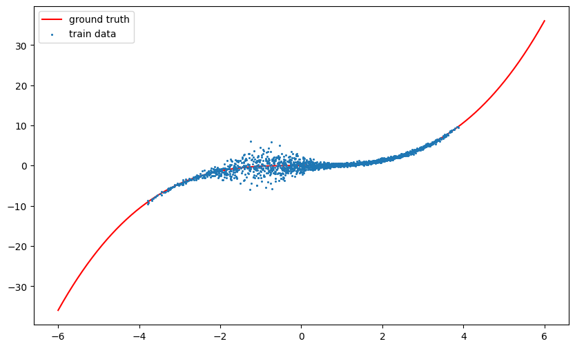
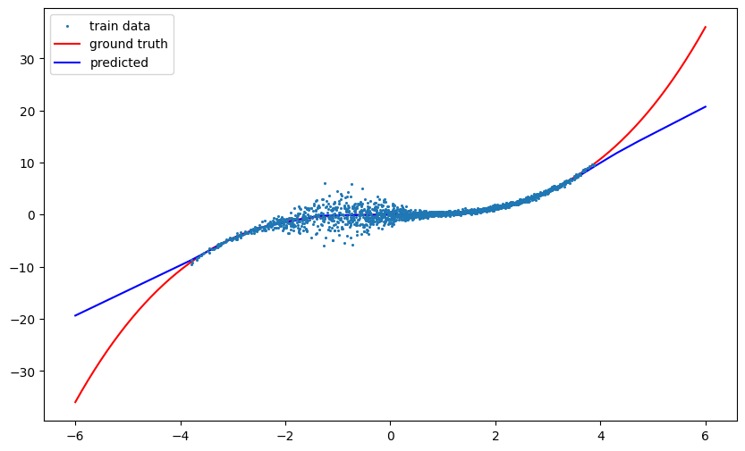
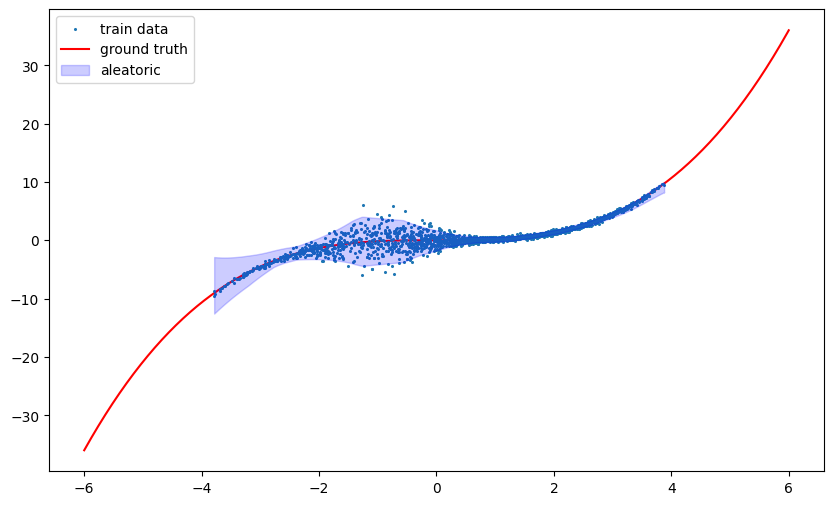
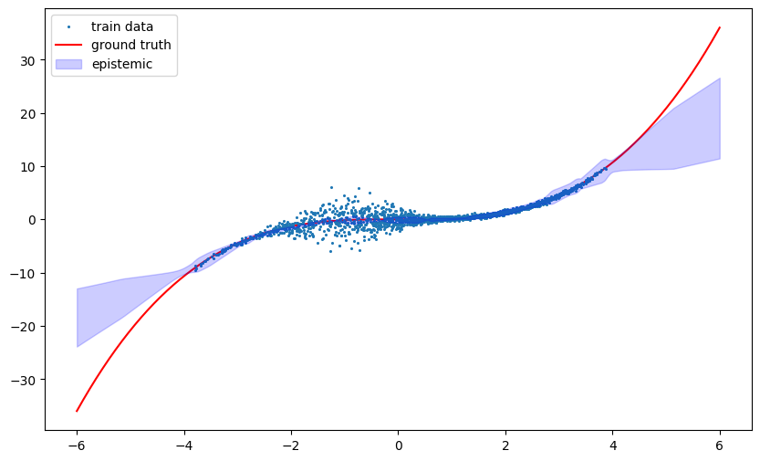

2023년 MIT에서 강의된 6.S191 강좌의 Lab의이해를 돕기위해 작성되었습니다.
Lab에 대해서는 이곳에서 확인가능하며, 해당 강좌는 여기서 확인가능합니다.
- Lab1-Part1 Intro to Tensorflow
- Lab1-Part2 Music Generation
- Lab2-Part1 MNIST
- Lab2-Part2 Diagnosing Bias
- Lab3-Part1 Introduction Caspa
- Lab3-Part2 Bias and Uncertainty
Lab2-Part2에서 살펴본 것처럼 딥러닝 모델의 편향과 불확실성 문제를 식별하고 진단할 수 있어야 합니다. 특정 모델이 얼마나 불확실한지 균일하게 측정할 수 있는 벤치마크가 필요하며, 편향성과 불확실성을 측정하는 원칙적인 방법이 필요합니다. 이를 위해 이번 실습에서는 테미스 AI에서 개발한 위험 추정 래핑 라이브러리인 Capsa를 활용합니다.
# Import Tensorflow 2.0
%tensorflow_version 2.x
import tensorflow as tf
import IPython
import functools
import matplotlib.pyplot as plt
import numpy as np
from tqdm import tqdm
# Download and import the MIT Introduction to Deep Learning package
!pip install mitdeeplearning
import mitdeeplearning as mdl
# Download and import Capsa
!pip install capsa
import capsa5.1 Dataset
\(y=x^3\) 함수를 모델링하기 위해 신경망을 훈련하여 편향과 불확실성에 대한 이해를 쌓을 것입니다. 이 데이터 세트와 모델의 성능을 분석하기 위해 Capsa를 사용할 것입니다.
# Get the data for the cubic function, injected with noise and missing-ness
# This is just a toy dataset that we can use to test some of the wrappers on
def gen_data(x_min, x_max, n, train=True):
if train:
x = np.random.triangular(x_min, 2, x_max, size=(n, 1))
else:
x = np.linspace(x_min, x_max, n).reshape(n, 1)
sigma = 2*np.exp(-(x+1)**2/1) + 0.2 if train else np.zeros_like(x)
y = x**3/6 + np.random.normal(0, sigma).astype(np.float32)
return x, y
# Plot the dataset and visualize the train and test datapoints
x_train, y_train = gen_data(-4, 4, 2000, train=True) # train data
x_test, y_test = gen_data(-6, 6, 500, train=False) # test data
plt.figure(figsize=(10, 6))
plt.plot(x_test, y_test, c='r', zorder=-1, label='ground truth')
plt.scatter(x_train, y_train, s=1.5, label='train data')
plt.legend()
그림에서 볼 수 있듯이, -6 ~ -4 구간과 4 ~ 6 구간의 경우 data가 없는 model uncertainty 상태이고, -2 ~ 0 구간의 경우 data의 noise가 높은 data uncertainty 상태입니다.
5.2 Regression on dataset
### Define and train a dense NN model for the regression task###
'''Function to define a small dense NN'''
def create_dense_NN():
return tf.keras.Sequential(
[
tf.keras.Input(shape=(1,)),
tf.keras.layers.Dense(32, "relu"),
tf.keras.layers.Dense(32, "relu"),
tf.keras.layers.Dense(32, "relu"),
tf.keras.layers.Dense(1),
]
)
dense_NN = create_dense_NN()
# Build the model for regression, defining the loss function and optimizer
dense_NN.compile(
optimizer=tf.keras.optimizers.Adam(learning_rate=5e-3),
loss=tf.keras.losses.MeanSquaredError(), # MSE loss for the regression task
)
# Train the model for 30 epochs using model.fit().
loss_history = dense_NN.fit(x_train, y_train, epochs=30)Epoch 30/30
63/63 [==============================] - 0s 4ms/step - loss: 0.8027모델 훈련을 마쳤으니, 모델이 얼마나 실제를 잘 따르는지 확인해봅시다.
# Pass the test data through the network and predict the y values
y_predicted = dense_NN.predict(x_test)
# Visualize the true (x, y) pairs for the test data vs. the predicted values
plt.figure(figsize=(10, 6))
plt.scatter(x_train, y_train, s=1.5, label='train data')
plt.plot(x_test, y_test, c='r', zorder=-1, label='ground truth')
plt.plot(x_test, y_predicted, c='b', zorder=0, label='predicted')
plt.legend()
data uncertainty 상태의 구간에서는 잘 훈련된 것으로 보이나,
model uncertainty 상태의 구간에서는 훈련이 잘 되지 못하였습니다.
이제 Caspa를 통해 각 uncertainty를 시각화해보겠습니다.
5.4 Estimate Data Uncertainty
이제 모델이 어떻게 예측하였는지 확인하였으니, 이 모델에서의 data uncertainty에 대해 확인해봅시다.
### Estimating data uncertainty with Capsa wrapping ###
standard_dense_NN = create_dense_NN()
# Wrap the dense network for aleatoric uncertainty estimation
mve_wrapped_NN = capsa.MVEWrapper(standard_dense_NN)
# Build the model for regression, defining the loss function and optimizer
mve_wrapped_NN.compile(
optimizer=tf.keras.optimizers.Adam(learning_rate=1e-2),
loss=tf.keras.losses.MeanSquaredError(), # MSE loss for the regression task
)
# Train the wrapped model for 30 epochs.
loss_history_mve_wrap = mve_wrapped_NN.fit(x_train, y_train, epochs=30)
# Call the uncertainty-aware model to generate outputs for the test data
x_test_clipped = np.clip(x_test, x_train.min(), x_train.max())
prediction = mve_wrapped_NN(x_test_clipped)
# Capsa makes the aleatoric uncertainty an attribute of the prediction!
pred = np.array(prediction.y_hat).flatten()
unc = np.sqrt(prediction.aleatoric).flatten() # out.aleatoric is the predicted variance
# Visualize the aleatoric uncertainty across the data space
plt.figure(figsize=(10, 6))
plt.scatter(x_train, y_train, s=1.5, label='train data')
plt.plot(x_test, y_test, c='r', zorder=-1, label='ground truth')
plt.fill_between(x_test_clipped.flatten(), pred-2*unc, pred+2*unc,
color='b', alpha=0.2, label='aleatoric')
plt.legend()
5.4 Estimate Model Uncertainty
### Estimating model uncertainty with Capsa wrapping ###
standard_dense_NN = create_dense_NN()
# Wrap the dense network for epistemic uncertainty estimation with an Ensemble
ensemble_NN = capsa.EnsembleWrapper(standard_dense_NN)
# Build the model for regression, defining the loss function and optimizer
ensemble_NN.compile(
optimizer=tf.keras.optimizers.Adam(learning_rate=3e-3),
loss=tf.keras.losses.MeanSquaredError(), # MSE loss for the regression task
)
# Train the wrapped model for 30 epochs.
loss_history_ensemble = ensemble_NN.fit(x_train, y_train, epochs=30)
# Call the uncertainty-aware model to generate outputs for the test data
prediction = ensemble_NN(x_test)
# Capsa makes the epistemic uncertainty an attribute of the prediction!
pred = np.array(prediction.y_hat).flatten()
unc = np.array(prediction.epistemic).flatten()
# Visualize the aleatoric uncertainty across the data space
plt.figure(figsize=(10, 6))
plt.scatter(x_train, y_train, s=1.5, label='train data')
plt.plot(x_test, y_test, c='r', zorder=-1, label='ground truth')
plt.fill_between(x_test.flatten(), pred-20*unc, pred+20*unc, color='b', alpha=0.2, label='epistemic')
plt.legend()